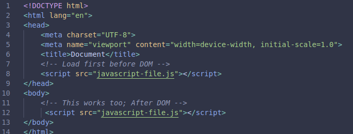

What is JavaScript?
JavaScript is a versatile programming language that adds interactivity and dynamic behavior to web pages. Originally designed for client-side scripting in browsers, it now powers server applications, mobile apps, and desktop software. JavaScript manipulates HTML structures, responds to user actions, communicates with servers asynchronously, and creates rich single-page applications that deliver seamless experiences comparable to native software applications.
Linking to HTML
JavaScript integrates with HTML through script elements placed in head or body sections, external files referenced via src attributes, or inline event handlers on HTML elements. External scripts loaded with defer or async attributes optimize loading performance by preventing blocking of document parsing. Best practices recommend placing scripts just before closing body tags for optimal rendering performance without sacrificing functionality or interactivity requirements.

Syntax
JavaScript syntax resembles C-style languages with statements ending in semicolons, curly braces defining code blocks, and parentheses grouping expressions and function arguments. Variables declared using const, let, or var store data values. Functions encapsulate reusable logic accepting parameters and returning computed results. Control flow uses conditionals and loops, while objects organize related data and behaviors into cohesive units representing real-world entities within program logic.
Fetching HTML ID
JavaScript retrieves DOM elements using document.getElementById() method passing the unique identifier string as argument. This returns a reference to the specific element node for subsequent modifications. Alternative methods include querySelector() for CSS selector matching and getElementsByClassName() for class-based collections. Understanding retrieval methods enables selective targeting for precise element manipulation without affecting unrelated elements elsewhere in the document tree structure.
Editing HTML and CSS
JavaScript modifies HTML content through properties like innerHTML and textContent, replaces element nodes with createElement(), and adjusts attributes dynamically. CSS styling changes occur through the style object accessing properties directly or modifying className arrays to toggle predefined classes. Event listeners attach callback functions responding to user interactions, enabling reactive interfaces updating in real-time based on clicks, inputs, scrolls, or other triggered user actions throughout the browsing session.
Click Function
Click handlers execute code when users activate clickable elements, implemented through onclick attributes or addEventListener('click', callback) methods. Modern practice favors addEventListener for flexibility supporting multiple handlers on single elements and cleaner separation of concerns. Click functions commonly trigger modals, validate forms, toggle visibility states, initiate animations, or submit data to servers. Mastering event-driven programming unlocks sophisticated interactive capabilities transforming static web pages into engaging applications responsive to human input continuously.